Sunday, May 21, 2006
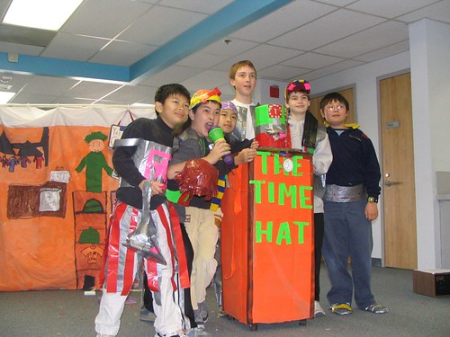
So the brothers had their final meeting and practice session. We received a briefing on what to expect at Globals, and got their pins. If we can get Internet connectivity while we are there we will be using this blog to report daily on our happenings.
Can we upload photos here? lets see!
6:13am, Wednesday, May 24, 2006
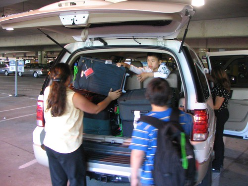
We've arrived!
The flight was good, no delays and smooth flying the entire way. We arrived at Nashville with some confusion as to what the time was (answer: Nashville is on Central time, Knoxville on Eastern).
We got the SUV, and were just able to fit everyone and everything inside.
We drove off about 5:30, stopping to eat at a Pizza place. We stopped once on the way, at a place that featured "Icees, all sizes, 69cents!!" This was compared quite favorably to Bonfaire's prices, and the cultural advantages of rural Tennessee was briefly discussed.
We arrive at about 10:30 local time (I think), and checked in to the dorms at about 11:30 or so. Alex and Brian are sharing a room, and Forrest and Olaf are sharing another.
We had a late night quick briefing, and after unpacking and washing up were in bed by 1:00am.
1:20pm, Wednesday, May 24, 2006
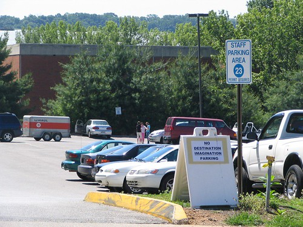
Breakfast is served 7:00-9:00, which translates to 4:00-6:00 our time. Alex and Brian went down first. Joy of joys, they had biscuits with gravy, but neither boy seemed to appreciate that fact. Oh Well.
We saw Olaf and Forrest on the way out, everyone is downstairs trading pins. We've met international teams from Poland, Singapore, and Guatemala, and US team from all over.
I managed to get online, but wow does dialup seem slow.
Plans for today: inspect all the props we shipped, figure out how to make a new hat box and Duct Tape Brothers sign. The afternoon will be a session for the boys on how to do instant challenges. The opening ceremony is tonight at 7:00.
8:24pm, Wednesday, May 24, 2006
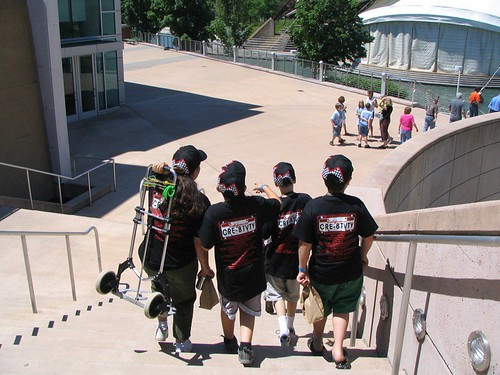
We had to hurry lunch, in order to get to the special Instant Challenge workshop. One of the lunch pavillions had ready-made sandwiches to go, so that worked out perfectly. We ate on the way, walking and taking a shuttlebus.
The workshop was from 12-5:30, so that kept the boys occupied while Buffy went to a team managers' meeting. I took care of a few outstanding items and we picked them up from the workshop. They were pretty tired coming out. It seems they thought the training wasn't particularly special, which was generally attributed to the excellent job Buffy has been doing so far.
On the way back we found a cardboard box sitting next to a construction site that we salvaged to rebuild the hat stand. It was about 2'x2' and about 7 feet long. The bus driver very kindly let us bring it back!
8:53pm, Wednesday, May 24, 2006
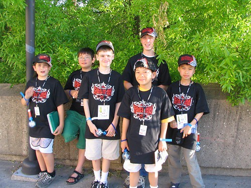
We rushed back from the workshop in order to have dinner as soon as possible. Partly because we wanted to have plenty of time to get to the opening ceremonies at 7:00, but mostly because we were all really hungry. Everybody was a bit grumpy but generally well behaved. The training they've been going through together is really paying off.
While we were at dinner, we received work that Eric and Michael had arrived! Everybody was happy with the news because we feared that we might not be able to hook up with them prior to the opening ceremony. We celebrated with a picture.
9:21pm, Wednesday, May 24, 2006 Once we were reunited, we walked to the coliseum for the opening ceremonies. There was a buzz in the air, and the Brothers were not immune. Buffy brought some flashy blinky toys, as is apparently the tradition for the opening ceremonies.
There were over 6,000 participants plus parents, managers, etc. It was truly an awesome experience, and when they introduced the teams from the various states and countries, the rafters shook with the cheers.
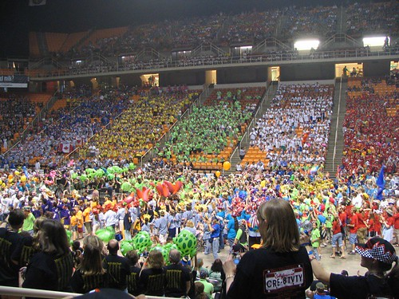
The foreign teams were given an especially rousing welcome. China, Singapore, several European and South/Central American countries all fielded teams.
There were the requisite speeches, which cooled everyone down but were generally well received. Finally it was time for the final parts of the ceremony. They played a medley of the National Anthems of all the participating countries. It was a surprisingly emotional tribute, and everyone in the arena was visibly moved.
Finally, the big finish arrived. There was an excellent music and light show filled with lasers and pyrotechnics.
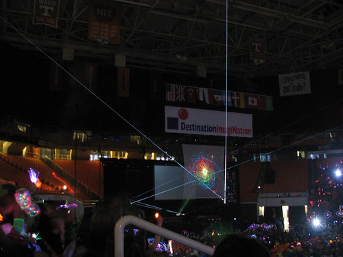
Everyone was totally taken with the performance. The Brothers, who had previously seen only the regional and state slideshows, were awestruck. It was truly an evening they will remember for the rest of their lives. The only thing needed to make it a perfect day was a bit of late-night pin trading.
6:15am, May 25, 2006 I'm not uploading all the photos I'm taking coz of the slow dialup line, but there's a few more than have been posted here (sad blogger.com story).
I've put these on my flickr account with their own "di" tag. You can view them here.
6:15am, Thursday, May 25, 2006 So the alarm went off at 7:30am local time, which translates to about 4:30am our time. The boys were up with a reasonable amount of vim and vigor. This was surprising given that we had all been awakened at about 4:30 by the dumpster truck banging the dumpsters around like some kind of anvil chorus.
If you're in line for breakfast before 8:00, it's basically a matter of walking in and being served. But if you're just a few minutes later than 8:00, the line goes down the stairs, down the hall, and out into the courtyard.
So our plan was to go and eat, and bring back some muffins and coffee for Buffy and Granny, who were busy taking care of Skye. This would also give them a bit more time to sleep in. That sounded like a good plan to Forrest and Olaf, who decided to join the sleeping-in crew.
It was raining a bit, but we caught a break in the weather and ran over to the cafeteria, threading our way through the early morning pin traders (much to the chagrin of Eric, who is showing all the early signs of Pin Mania Syndrome). Breakfast was good... Eggs, bacon, and waffles (the poor boys just don't seem to understand the logic behind putting gravy on perfectly good biscuits!).
We very tidily packed up enough muffins for everyone, and a couple of cartons of milk. However, we did not anticipate the exit door guy. In addition to making sure people didn't sneak in the exit, he's supposed to make sure large quantities of food doesn't sneak out the exit as well. In this case, "large quantities" seems to pretty much mean "any quantity." We explained the situtation to him, and he said we could each carry a muffin out, as if we were finishing it up, along with either a cup of coffee or a carton of milk (if it was opened... again, as if we were finishing it up).
So, we quickly redeployed the rations, and walked out the door and down the stairs, only to find ourselves in the middle of a huge storm, lightning and thunder and all. We took a few moments to discuss why storms over dry land generated more electrical activity than storms generated over water, and exactly how we were going to get back to the dorm without getting totally soaked. It seemed our best bet to head for the tent area where the pin traders where still hard at it. We waited a bit for a break in the weather but running out of patience declared by fiat that the weather had broken. Eric took the lead in dashing across the commons, with everyone else in tow. We had considered putting all the muffins in Eric's hat to keep them dry, but came to the conclusion that people would probably rather eat muffins that were a bit damp rather than muffins that had been stored in somebody's hat.
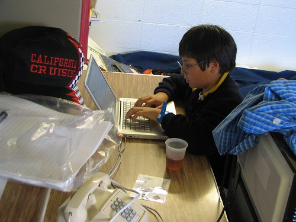
We survived the dash and have changed in to dry clothes, and are now in our homework hour, working on the various school assignments we brought with us.
Later we will work on rebuilding the props we broke down for shipment and rebuilding the things we didn't ship. One of the lunch pavillions is serving BBQ, featuring pulled pork sandwiches. The boys are eager to try this delicacy so we'll take the shuttle bus over that way, weather permitting.
5:18am, Thursday, May 25, 2006
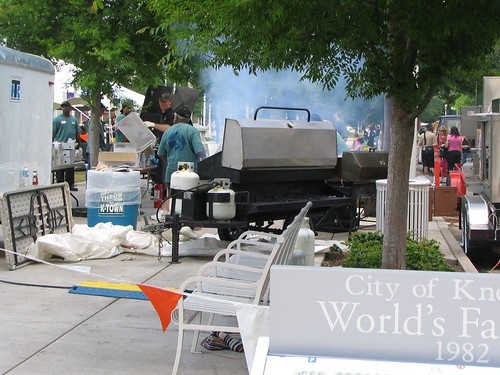
Lunch was a great success. Everyone enjoyed the much-discussed pulled pork sandwich, along with coleslaw, potato salad, and BBQ beans. Following up with an ice-cream sandwich, everyone agreed, was a splendid idea.
After lunch, we went to the pin trading area away from our dorm. This was important, because we're placed into the dorms by state, so the California pins we had were in high supply and low demand at the nearby trading area.
We met people from quite a few states and countries, and the "pin theory" of introduction proved to be quite accurate. We greeted and were greeted by many people with the simple phrase, "Where are you from? Any interesting pins you've traded for?"
We met the Chinese team, who was trading lots of miscellaneous Bejing 2008 pins -- not quite genuine DI pins, but plenty close for most people. Also hot on the trading list were the Colorado and Poland pins, as well as the Maryland crabs and Massachusetts ducks. Texas was in a pin league of their own, with many individual team pins as well as numerous state and region pins.
9:08pm, Thursday, May 25, 2006
I hope that the posts so far haven't given the impression that the boys have been focused exclusively on eating and pin trading. They've been doing quite a bit of work preparing for their presentation times.
They had to unpack all of the stuff which had been shipped, and see if it was still in working order. It was, fortunately, including the hat and the barrel noise-maker. (I had to go down with Buffy to fetch the stuff from the shipping dock... it was heavy, the biggest package being over 50 lbs. Buffy gets another checkmark on her sainthood scorecard for packing that up and carrying it to the post office!)
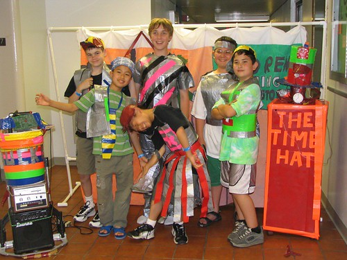
In addition, they created a new Duct Tape Brothers sign, and made a new hat stand. Everyone was very delighted with the new work and agreed that it was an improvement on the previous pieces. I think they were pleased that they were able to take a potential setback (not having some of their props shipped) and, with very limited time (a day) and supplies (a box scrounged from a construction site) and turn it around into something which actually improved their project.
They did a runthrough in the hall before going to dinner. Everyone was a bit tired and hungry, so there was a reasonable share of frazzled nerves and short tempers, but overall it was a successful walk-through. The practice session was right in front of the elevator, so they would periodically get a surprised-looking audience every few minutes.
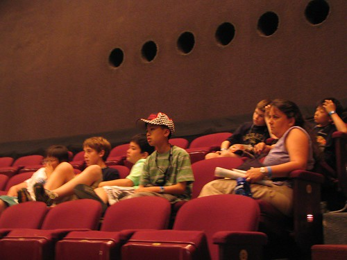
Earlier in the day (on the way home from pin trading) we stopped off to watch a few competitors and see what the stage looked like. There's a picture of Tom Hanks there when he performed on the very stage, which made a bit of an impression on everybody.
We had a pretty tough reminder that the Globals are a serious competition. The second team we watched ran over their 8-minute allotment, and the appraisers called time. The lights went up, and the team had to stop in mid-presentation. In the regionals, they let the teams wrap up their act, but the Globals are on a tight schedule, and the competitors are expected to understand and conform to all the rules.
9:24pm, Thursday, May 25, 2006
You know how we had the torrential downpour this morning? It stopped after just about 2 hours and the sun came out. Yes, this caused it to become super-hot and really muggy. The boys noticed and commented on the high humidity. Everyone was a bit sweaty and sticky as we walked around, and appreciative when the evening came around and the temperature was a bit more moderate.
In the evening, some of the Brothers (Alex, Olaf, and Forrest) went to swim and the rest went to play in the rec center. I went with the swimmers and we had a grand time, estimating the size of the pool to be on the order of 5 or 6 Piedmont Pools. When we found out this was just the crummy outside pool and that the "real" competitive pool was indoors we were doubly impressed. We swam in the deep end and also dived off the 1 meter and 3 meter boards.
After a while, the pool was cleared on account of a thunderstorm rolling into the area. We played a few games of "Drop 4" on a jumbo set they had by the pool. Olaf beat everyone handily, me included.
We met back at the rooms and got everyone to sleep after some time. Tomorrow, the instant challenge awaits!
12:20pm, Friday, May 26, 2006
Dear Mr. Scherman + Rest of class,
We're happy to tell you that we're moving along nicely on our props/performance. Some of the earlier setbacks, such as taking apart some of the props has proven to be good, because we went crazy and made it totally (way) cool. We've also watched some of the other challenges, including one of the high school ones for the challenge, "Kidz Rulz". It was really really good, and I'd be surprised if they didn't win. We also soaked ourselves to the bone with this weird fountain thing. The funny thing is everyone loved it, even though we all have blood shot eyes. The UT campus has two pools, both the size of about six Piedmont Pools. It is even bigger than an Olympic pool. They have a diving board that's 10 meters up. That's 30 feet. I can't imagine what it would feel like to go off for the first time, I went off the 9 foot one, and it was really scary. The pool was 20 feet deep in the diving area, and in the indoor pool, which was even bigger, it was 25 feet. It would kill my ears pretty bad if I had to go down that deep. We had our instant challenge. I'm prohibited from talking about it, but I'll tell you. They really put us to the test in that one. However, out of the 100 points (max), 20 of them were for teamwork. We had extreme teamwork. This is just a small example of how much they try and teach us teamwork. Just like the saying, "Location Location Location", this is "Teamwork, Teamwork, Teamwork". I love the appraisers here, they're so nice. They make like "Super Hats", which they wear. This one person made a chicken hat, and another woman, from our region made a "Nacho Hat". It was so cool. Well, I hope things are going well in the good ol' state of California.
Best regards,
Alex~
1:21pm, Friday, May 26, 2006
So we got up early and did some stuff for the 3M instant challenge, which is to make something out of duct tape (invented by 3M, who knew?). They did this out by the elevators where they worked on their performance last night. Every few minutes, some of the girls from a team in Texas would pop out of the elevator, with many giggles ensuing. We chatted with them and made arrangements to go and see their performance later in the day.
They went off to instant challenge, where they didn't do as well as they hoped. However, they were pleased to have gotten full marks (20 out of 20) on teamwork and cooperation. It did a pretty good job on getting them focused on the performance competition tomorrow.
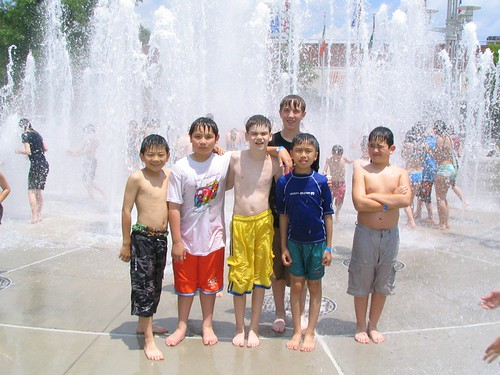
They went to eat lunch (at our now-standard BBQ pavillion) and see their new-found friends' performance. Following that we went to the fountain where everyone was playing in the water. It was a welcome relief from the heat, which was in the high 80's. We came back to the dorm, where we discovered the niceness of a midday shower.
We've just done a walk-through, and are off to the rec center... Dinner at 6:00, and then swimming again. When I get back I'll upload some more pictures... [update: pictures uploaded!]
Editorial note: Of all the pictures I've taken of the Brothers during the past two years, this one is my personal favorite. I'll definitely post a high-resolution version when I get back.
7:55pm, Friday, May 26, 2006
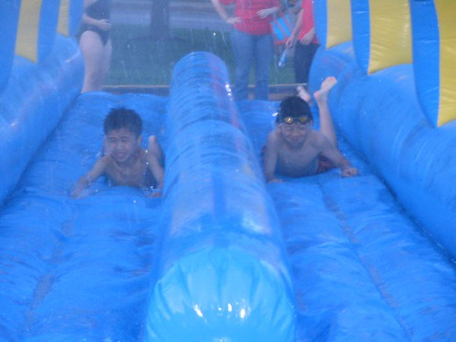
The high today was 86 degrees, with a pretty high humidity thanks to an early morning rainshower. One advantage of that is that the pool is warm and perfect for evening swimming. After dinner we cleaned up and went to the pool (did I mention homework in the previous post? We did that in the afternoon, and the Brothers worked diligently on their assignments.)
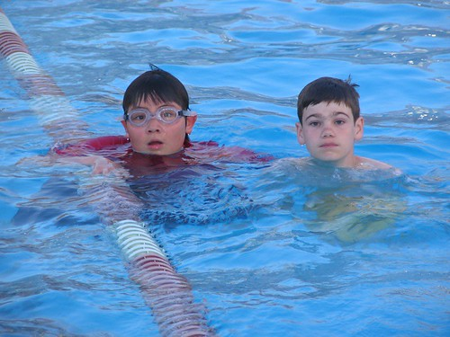
We spent quite a lot of time at the pool, not coming home till past 9:30. In addition to swimming and diving (a few of them off the 3-meter board, a sight to behold!), there was an enormous slip-and-slide which was a lot of fun. There were two tracks next to each other, so they could run in pairs and slide together. There were water sprayers to keep everything wet and slippery, and a splash pool at the end that served as a landing zone. The only drawback seemed to be that all of this was fed from a hose, so it was a cold cold cold splash at the end.
We came back, cleaned up and showered, and got right to bed. Everyone was pretty tired out from the day's activities, and they know there's a lot riding on tomorrow. They did a walk-through of the script today, and it sounded pretty good. They're concerned about their backdrop holding together throughout the backdrop flips, and might make a few last minute fixes to that in order to keep it together. Interestingly enough, they received some new stretchy plastic tape from 3M yesterday that looks like it might be good for this.
So, tomorrow is the big day... keep the Brothers in your thoughts and prayers!
administrivia: Blogspot has been fussy about image uploading, so I've been typing in these reports and uploading the images to flickr.com. I'll fiddle with it some more and get some pictures uploaded.
Also, if you want to watch the closing ceremonies, check out the details at the webcast page. Two things to note:
I think this is at 4:00pm your time on Saturday.
Don't miss this time, because it will be streamed "live" and if you don't see it then, you won't get a chance to see it later.
There are also some photos at the global finals page. What they don't mention is that anybody at the actual global finals can't enjoy them very much because we're stuck with ridiculously slow dialup connections! But you at home can enjoy them all. :-)
9:19pm, Friday, May 26, 2006
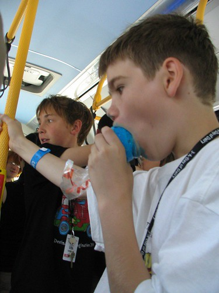
As in, when I was a youth the jawbreakers could actually be placed in between the jaws! However, this confection was the odds-on favorite when they stopped to get candy, and nobody enjoyed it with more gusto than Olaf.
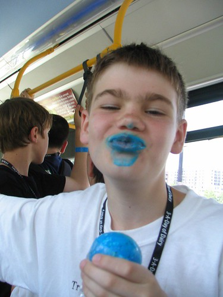
These do seem to have a couple of natural advantages: you can't actually get enough of them into your mouth to actually eat them, and people on the bus are happy to give you plenty of room.
10:01pm, Saturday, May 27, 2006
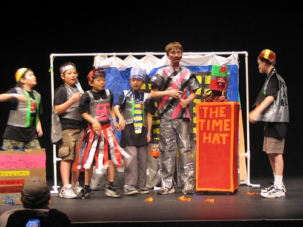
Yes, the Brothers pulled it together and their performance was amazing. More later, but be prepared for good news!
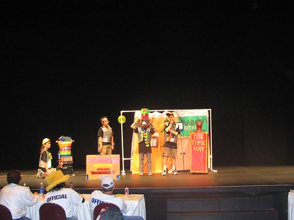